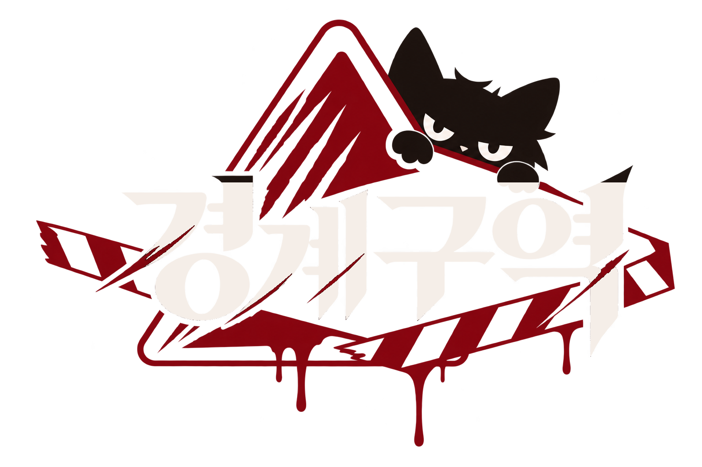
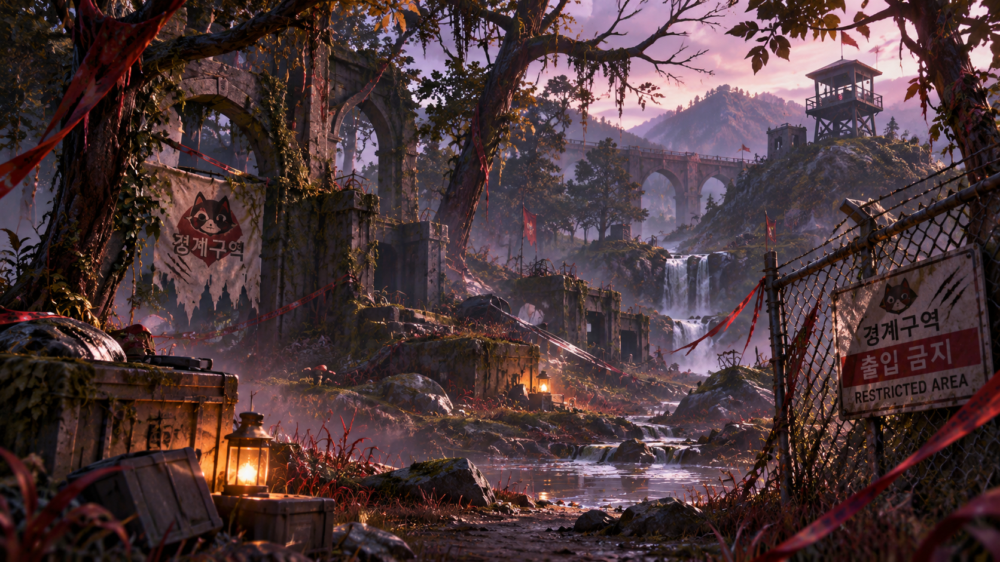
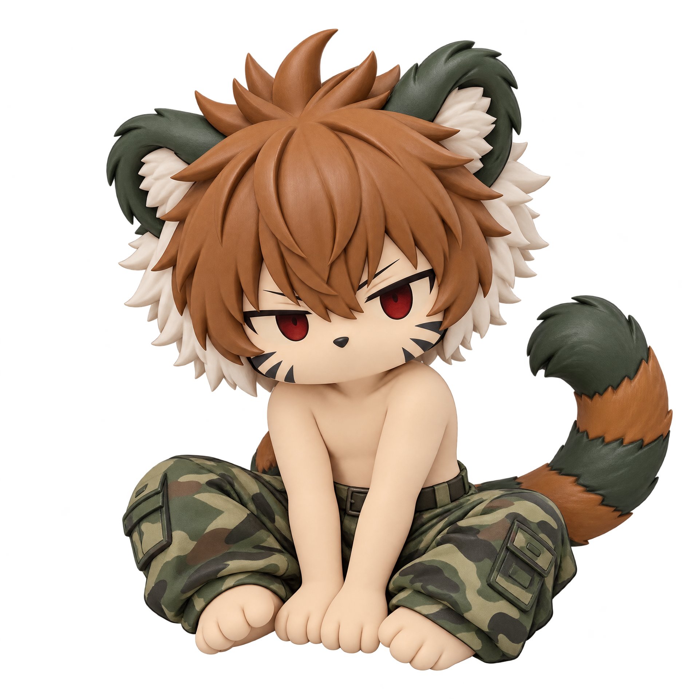

FILE.001 / SERGEANT
군여우
강제 파병된 피곤한 중사

BOUNDARYTHE WORLD AFTER THE WAR
전쟁 이후 폐허가 된 숲과 마을. 무너진 문명 속에서 각자의 영역을 지키는 존재들이 살아간다.
서로 다른 과거와 목적을 가진 다섯 수호자. 이들은 자신만의 구역을 지키며 경계구역에서 살아간다.
ACCESS
MEET THE GUARDIANS
각자의 방식으로 자신의 영역을 지키는
다섯 캐릭터를 소개합니다.
강제 파병된 피곤한 중사
숲속의 호기심 많은 수집가
용맹하지만 자본주의에 약한 사냥개

남은 마을을 지키는 생존자
영역을 침범하는 자에게 가차 없는 수호자
TAKE YOUR GUARDIAN HOME
경계구역의 캐릭터를 손안의 오브제로.
직접 제작하고 있는 굿즈 라인업입니다.
캐릭터 피규어
캐릭터 마그넷
캐릭터 커스텀 키캡
아크릴 스탠드
EVERY MOMENT, EVERY OBJECT
캐릭터 원화부터 3D 출력, 도색, 굿즈 제작까지.
경계구역 프로젝트의 이미지를 한곳에서 확인하세요.
THE BORDER IS ONLY THE BEGINNING
경계구역의 기록은 계속됩니다.
BACK TO TOP ↑